Brain stimulation, fraud, and the RIOT Science Club
With Sam Westwood
Conversations about scientific rigor, research integrity, and the institutions and incentives that shape science.
Sam Westwood
Find the podcast
YouTubeWatch the conversations SpotifyListen wherever you are SubstackRead, subscribe & join inInterviews on replication, research integrity, open science, and data reliability.
With Sam Westwood
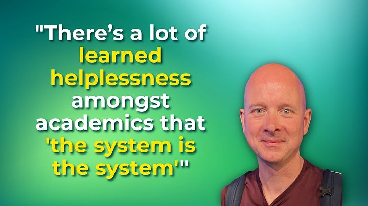
1:03:41With Chris Chambers
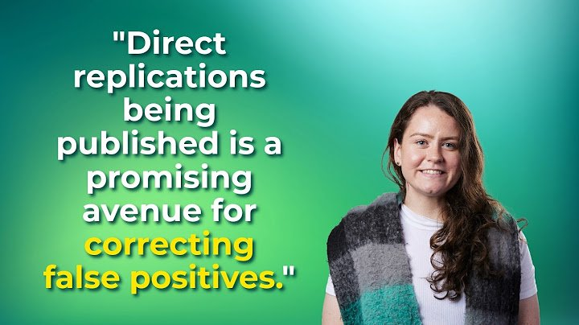
59:26With Beth Clarke
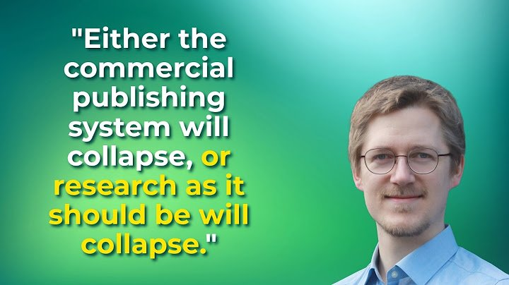
1:19:03With Lukas Röseler
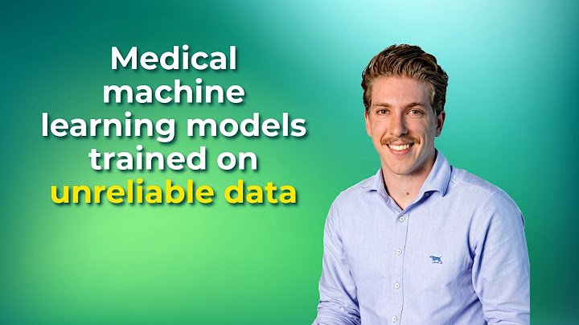
54:51With Alexander Gibson
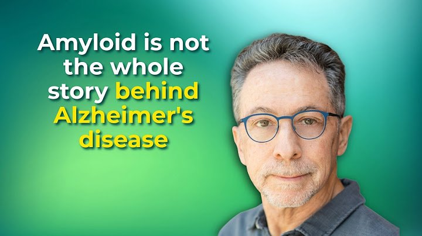
1:02:30With Charles Piller
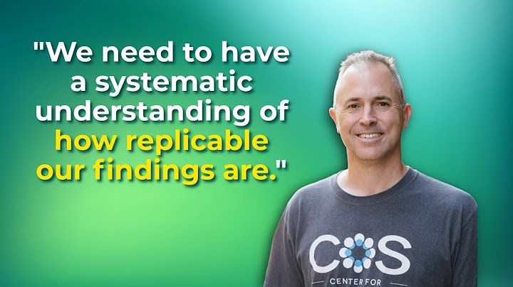
34:13With Brian Nosek
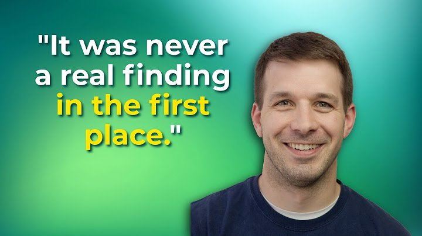
1:48:00With Tim Errington
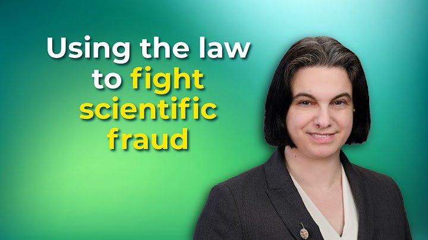
1:08:39With Eugenie Reich
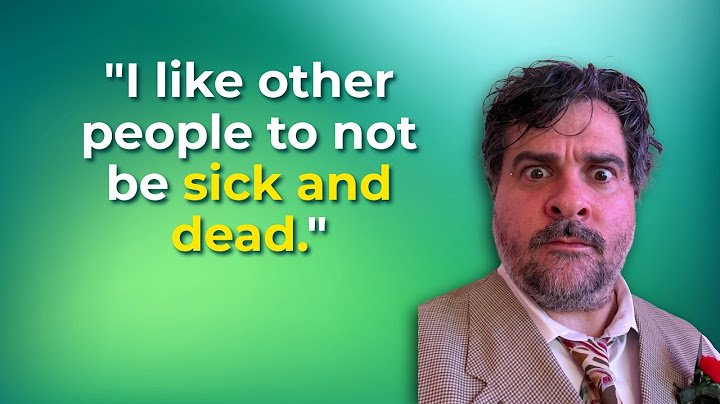
1:17:08With James Heathers
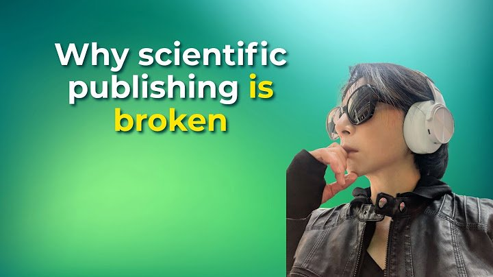
2:01:45With Mu Yang
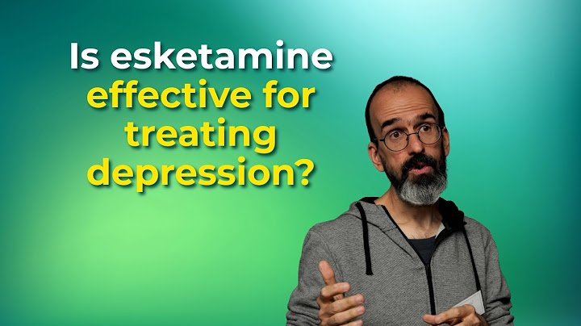
1:03:48With Florian Naudet
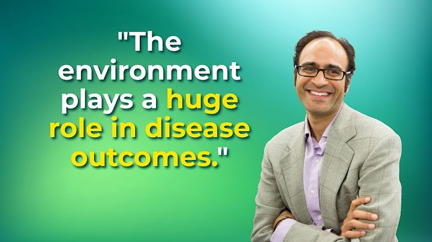
33:04With Chirag Patel
Try another guest, title, or topic.
The full podcast is available on Spotify. Listen here or open the show in your app.
Open Spotify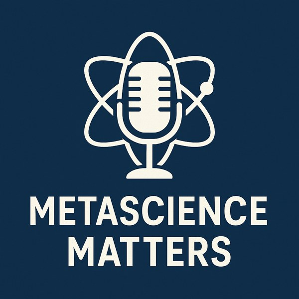
Metascience is the study of science itself: its methods, incentives, and institutions.
I’m Randy Ellis, a computational biologist and neuroscientist who cares about scientific rigor. I started Metascience Matters to explore the systemic issues that slow scientific progress, and the people working to fix them.
The show covers replication failures, research fraud, open science, and data reliability through interviews with researchers, reformers, and scientific sleuths.
Suggest a guest or get in touchViews are my own.